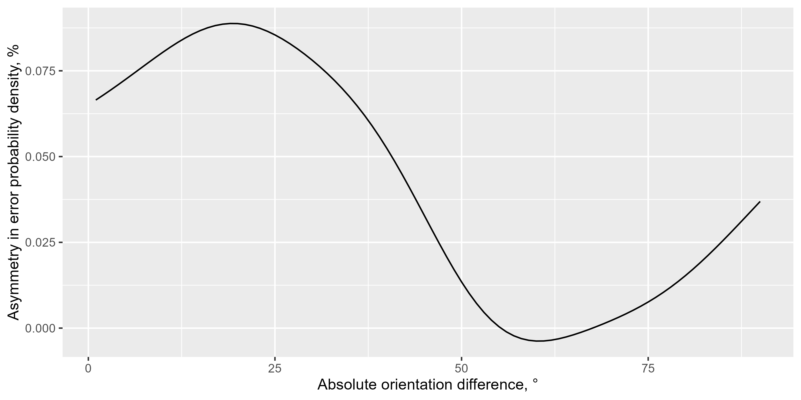

This function calculates the asymmetry in the probability density of a given variable (usually errors) relative to another variable (usually dissimilarity) using kernel density estimation. The asymmetry is computed for each x-axis value, and the result can be averaged or returned for each value individually.
Usage
density_asymmetry(
dt,
circ_space = 180,
weights_sd = 10,
kernel_bw = NULL,
xvar = "abs_td_dist",
yvar = "bias_to_distr_corr",
by = c(),
n = 181,
average = T,
return_full_density = F
)Arguments
- dt
data.table with the data.
- circ_space
Circular space, which can be 180 or 360 (default: 180).
- weights_sd
Standard deviation of the Gaussian window to use across
xvar(default: 10).- kernel_bw
Bandwidth for the kernel density estimator across
yvar. If NULL, it is computed usingstats::bw.SJ()(default: NULL).- xvar
X-axis variable, such as dissimilarity between items (default: "abs_td_dist").
- yvar
Y-axis variable, normally errors (default: "bias_to_distr_corr").
- by
A vector of grouping variable names (default: an empty vector).
- n
The number of steps for the x-axis variable at which the density is computed (default: 181).
- average
If TRUE, the asymmetry is averaged for each x-value (default: TRUE).
- return_full_density
If TRUE, returns the full data.table with density computed at each point (default: FALSE).
Value
A data.table with the grouping variables, dist - the values of X-axis variable at which the density is computed, and delta - the difference (asymmetry) in probability density for positive and negative values of yvar; or the full density data if return_full_density is TRUE.
Examples
data(Pascucci_et_al_2019_data)
ex_data <- Pascucci_et_al_2019_data
ex_data[, err := angle_diff_180(reported, orientation)] # response errors
#> observer orientation reported rt err
#> <int> <int> <int> <num> <num>
#> 1: 1 135 137 1.0829786 2
#> 2: 1 65 56 0.9887931 -9
#> 3: 1 61 65 1.5067748 4
#> 4: 1 27 25 1.9070205 -2
#> 5: 1 22 20 2.0247443 -2
#> ---
#> 4396: 10 35 26 1.7775651 -9
#> 4397: 10 141 135 2.0365374 -6
#> 4398: 10 178 163 1.1301296 -15
#> 4399: 10 168 168 1.3772832 0
#> 4400: 10 24 28 2.3897599 4
ex_data[, prev_ori := shift(orientation), by = observer] # orientation on previous trial
#> observer orientation reported rt err prev_ori
#> <int> <int> <int> <num> <num> <int>
#> 1: 1 135 137 1.0829786 2 NA
#> 2: 1 65 56 0.9887931 -9 135
#> 3: 1 61 65 1.5067748 4 65
#> 4: 1 27 25 1.9070205 -2 61
#> 5: 1 22 20 2.0247443 -2 27
#> ---
#> 4396: 10 35 26 1.7775651 -9 68
#> 4397: 10 141 135 2.0365374 -6 35
#> 4398: 10 178 163 1.1301296 -15 141
#> 4399: 10 168 168 1.3772832 0 178
#> 4400: 10 24 28 2.3897599 4 168
# determine the shift in orientations between trials
ex_data[, diff_in_ori := angle_diff_180(prev_ori, orientation)]
#> observer orientation reported rt err prev_ori diff_in_ori
#> <int> <int> <int> <num> <num> <int> <num>
#> 1: 1 135 137 1.0829786 2 NA NA
#> 2: 1 65 56 0.9887931 -9 135 70
#> 3: 1 61 65 1.5067748 4 65 4
#> 4: 1 27 25 1.9070205 -2 61 34
#> 5: 1 22 20 2.0247443 -2 27 5
#> ---
#> 4396: 10 35 26 1.7775651 -9 68 33
#> 4397: 10 141 135 2.0365374 -6 35 74
#> 4398: 10 178 163 1.1301296 -15 141 -37
#> 4399: 10 168 168 1.3772832 0 178 10
#> 4400: 10 24 28 2.3897599 4 168 -36
ex_data[, abs_diff_in_ori := abs(diff_in_ori)]
#> observer orientation reported rt err prev_ori diff_in_ori
#> <int> <int> <int> <num> <num> <int> <num>
#> 1: 1 135 137 1.0829786 2 NA NA
#> 2: 1 65 56 0.9887931 -9 135 70
#> 3: 1 61 65 1.5067748 4 65 4
#> 4: 1 27 25 1.9070205 -2 61 34
#> 5: 1 22 20 2.0247443 -2 27 5
#> ---
#> 4396: 10 35 26 1.7775651 -9 68 33
#> 4397: 10 141 135 2.0365374 -6 35 74
#> 4398: 10 178 163 1.1301296 -15 141 -37
#> 4399: 10 168 168 1.3772832 0 178 10
#> 4400: 10 24 28 2.3897599 4 168 -36
#> abs_diff_in_ori
#> <num>
#> 1: NA
#> 2: 70
#> 3: 4
#> 4: 34
#> 5: 5
#> ---
#> 4396: 33
#> 4397: 74
#> 4398: 37
#> 4399: 10
#> 4400: 36
ex_data[, err_rel_to_prev_targ := ifelse(diff_in_ori < 0, -err, err)]
#> observer orientation reported rt err prev_ori diff_in_ori
#> <int> <int> <int> <num> <num> <int> <num>
#> 1: 1 135 137 1.0829786 2 NA NA
#> 2: 1 65 56 0.9887931 -9 135 70
#> 3: 1 61 65 1.5067748 4 65 4
#> 4: 1 27 25 1.9070205 -2 61 34
#> 5: 1 22 20 2.0247443 -2 27 5
#> ---
#> 4396: 10 35 26 1.7775651 -9 68 33
#> 4397: 10 141 135 2.0365374 -6 35 74
#> 4398: 10 178 163 1.1301296 -15 141 -37
#> 4399: 10 168 168 1.3772832 0 178 10
#> 4400: 10 24 28 2.3897599 4 168 -36
#> abs_diff_in_ori err_rel_to_prev_targ
#> <num> <num>
#> 1: NA NA
#> 2: 70 -9
#> 3: 4 4
#> 4: 34 -2
#> 5: 5 -2
#> ---
#> 4396: 33 -9
#> 4397: 74 -6
#> 4398: 37 15
#> 4399: 10 0
#> 4400: 36 -4
err_dens <- density_asymmetry(ex_data[!is.na(err_rel_to_prev_targ)],
circ_space = 180, weights_sd = 10, xvar = "abs_diff_in_ori",
yvar = "err_rel_to_prev_targ", by = c("observer")
)
ggplot(err_dens, aes(x = dist, y = delta)) +
geom_line(stat = "summary", fun = mean) +
labs(y = "Asymmetry in error probability density, %", x = "Absolute orientation difference, °")
